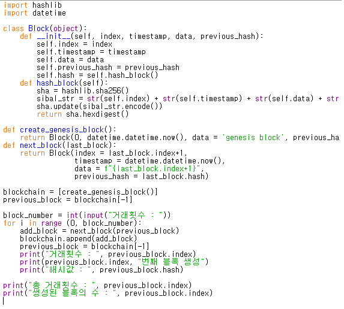

파이썬과 API에 대해 공부했습니다.
마이크로소프트의 얼굴인식 API와 Json을 이용해
사진의 얼굴 감정을 분석하는 프로그램을 만들었습니다.
파이썬의 기본 문법과 여러 모듈 등 파이썬을 활용하는 방법
파이썬의 2가지 이상의 모듈로 프로그램을 만들기
웹 크롤링을 통해 웹툰 목차를 가져오기들을 만들었습니다.

떠오르는 화제중 하나인 블록체인에 대해 공부했습니다.
파이썬으로 블록체인의 핵심 중 하나인 hash함수를 이용해
블록체인의 거래를 눈으로 볼 수 있는 프로그래밍 했습니다.
C언어와 파이썬을 이용한 암호학 공부
1학년때 배운 미적분학을 이용한 수학공부 등
암호학과 수학에 접근해 공부했습니다.
서버를 사용하기위해 우분투 서버를 이용한 방화벽과 포트 등 백엔드 분야를 공부했습니다.
현재 이 웹을 만들기 위해 HTML, CSS, JAVASCRIPT 등을 이용한 공부를 했습니다.
현재 방향은 듣는 과목을 중점으로 프론트엔드, 백엔드, DB, 네트워크를 공부하려합니다.
방학을 통해 리눅스 마스터와 정보처리기능사를 준비중입니다.